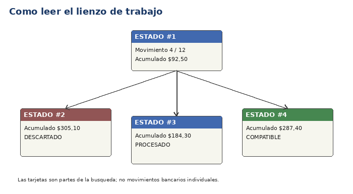

El lienzo central muestra cómo se está examinando el caso de conciliación. Cada tarjeta representa una parte de la búsqueda de una combinación compatible; no representa por sí sola un movimiento bancario.

Las tarjetas cambian de significado según el resultado de esa ruta.
Compatible significa que los montos acumulados en esa ruta igualan el monto a conciliar.
Descartado significa que esa ruta ya no necesita examinarse bajo las condiciones actuales.
Procesado significa que esa parte del trabajo fue examinada.
El lienzo puede ser mucho mayor que la ventana. Usa las barras horizontal y vertical, o mantén pulsado el botón central del ratón y arrastra para panear.
El control Zoom vive en una franja fija a la derecha del lienzo. Panear o mover las barras de desplazamiento no cambia su posición. Permite alejarse para comprender la forma general o acercarse para leer tarjetas individuales.
Conserva momentos significativos, como el inicio, algunos descartes, combinaciones compatibles y la finalización. No es una grabación completa de cada cálculo.
Es una indicación operacional de estados procesados por segundo. No es un benchmark formal: puede cambiar por el modo de ejecución, la frecuencia visual, la máquina virtual y otras tareas del equipo.
La barra resume cuánto trabajo potencial fue examinado o pudo evitarse de forma segura. Si el objetivo es detenerse en la primera coincidencia, la ejecución puede terminar antes del 100% porque el resto ya no era necesario para ese objetivo.
Una conciliación grande puede implicar mucho más trabajo del que tiene sentido dibujar. ReconcileLab puede seguir procesando estados sin crear una tarjeta detallada para cada uno. El resumen conserva las cifras globales.
El control Estados de búsqueda compatibles, situado junto a la actualización visual, reúne las coincidencias que todavía están disponibles en la vista detallada. Al elegir una, el lienzo se desplaza automáticamente hasta su tarjeta y la selecciona. Si no se ha encontrado ninguna, el control lo indica y permanece deshabilitado.